上節課，我們主要介紹了機器學習的可行性。首先，由 NFL 定理可知，機器學習貌似是不可行的。但是，隨後引入了統計學知識，如果樣本資料足夠大，且 hypothesis 個數有限，那麼機器學習一般就是可行的。本節課將討論機器學習的核心問題，嚴格證明為什麼機器可以學習。從上節課最後的問題出發，即當 hypothesis 的個數是無限多的時候，機器學習的可行性是否仍然成立？
# Recap and Preview
我們先來看一下基於統計學的機器學習流程圖：
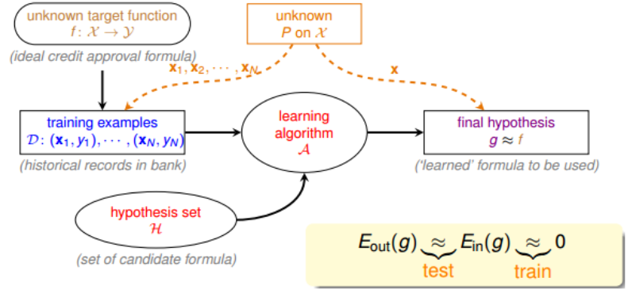
該流程圖中，訓練樣本 D 和最終測試 h 的樣本都是來自同一個資料分佈，這是機器能夠學習的前提。另外，訓練樣本 D 應該足夠大，且 hypothesis set 的個數是有限的，這樣根據霍夫丁不等式，才不會出現 Bad Data，保證，即有很好的泛化能力。同時，通過訓練，得到使 最小的 h，作為模型最終的矩 g，g 接近於目標函數。
這裡，我們總結一下前四節課的主要內容：
- 第一節課，我們介紹了機器學習的定義，目標是找出最好的矩 g，使，保證
- 第二節課，我們介紹了如何讓，可以使用 PLA、pocket 等演算法來實現
- 第三節課，我們介紹了機器學習的分類，我們的訓練樣本是批量資料（batch），處理監督式（supervised）二元分類（binary classification）問題
- 第四節課，我們介紹了機器學習的可行性，通過統計學知識，把 與 聯繫起來，證明了在一些條件假設下， 成立。
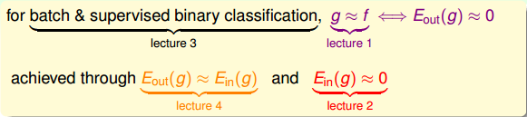
這四節課總結下來，我們把機器學習的主要目標分成兩個核心的問題：
- 足夠小
上節課介紹的機器學習可行的一個條件是 hypothesis set 的個數 M 是有限的，那 M 跟上面這兩個核心問題有什麼聯繫呢？
我們先來看一下，當 M 很小的時候，由上節課介紹的霍夫丁不等式，得到，即能保證第一個核心問題成立。但 M 很小時，演算法 A 可以選擇的 hypothesis 有限，不一定能找到使 足夠小的 hypothesis，即不能保證第二個核心問題成立。當 M 很大的時候，同樣由霍夫丁不等式， 與 的差距可能比較大，第一個核心問題可能不成立。而 M 很大，使的演算法 A 的可以選擇的 hypothesis 就很多，很有可能找到一個 hypothesis，使 足夠小，第二個核心問題可能成立。
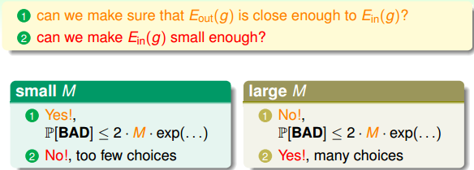
從上面的分析來看，M 的選擇直接影響機器學習兩個核心問題是否滿足，M 不能太大也不能太小。那麼如果 M 無限大的時候，是否機器就不可以學習了呢？例如 PLA 演算法中直線是無數條的，但是 PLA 能夠很好地進行機器學習，這又是為什麼呢？如果我們能將無限大的 M 限定在一個有限的 內，問題似乎就解決了。
# Effective Number of Line
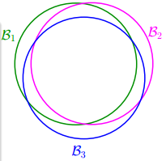
也就是說 union bound 被估計過高了（over-estimating）。所以，我們的目的是找出不同 BAD events 之間的重疊部分，也就是將無數個 hypothesis 分成有限個類別。
如何將無數個 hypothesis 分成有限類呢？我們先來看這樣一個例子，假如平面上用直線將點分開，也就跟 PLA 一樣。如果平面上只有一個點 x1，那麼直線的種類有兩種：一種將 x1 劃為 + 1，一種將 x1 劃為 - 1：
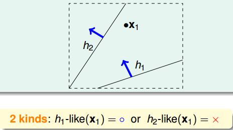
如果平面上有兩個點 x1、x2，那麼直線的種類共 4 種：x1、x2 都為 + 1，x1、x2 都為 - 1，x1 為 + 1 且 x2 為 - 1，x1 為 - 1 且 x2 為 + 1：
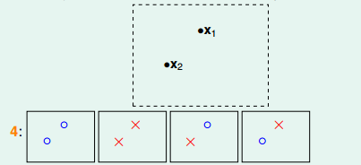
如果平面上有三個點 x1、x2、x3，那麼直線的種類共 8 種：
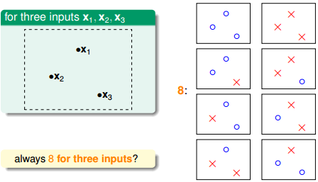
但是，在三個點的情況下，也會出現不能用一條直線劃分的情況：
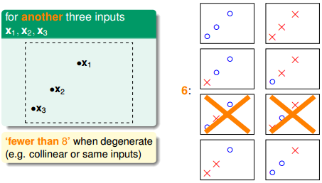
也就是說，對於平面上三個點，不能保證所有的 8 個類別都能被一條直線劃分。那如果是四個點 x1、x2、x3、x4，我們發現，平面上找不到一條直線能將四個點組成的 16 個類別完全分開，最多只能分開其中的 14 類，即直線最多只有 14 種：
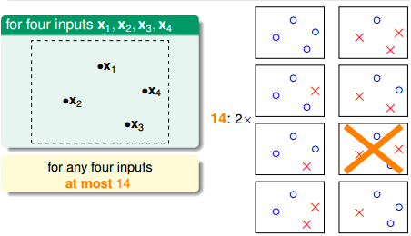
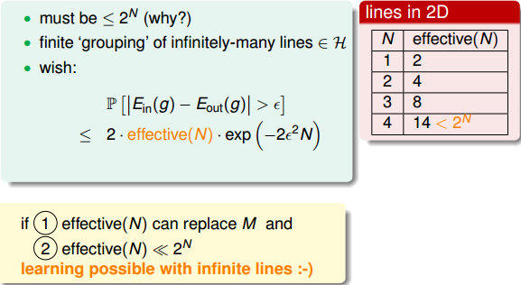
# Effective Number of Hypotheses
接下來先介紹一個新名詞：二分類（dichotomy）。dichotomy 就是將空間中的點（例如二維平面）用一條直線分成正類 o 和負類 x。令 H 是將平面上的點用直線分開的所有 hypothesis h 的集合，dichotomy H 與 hypotheses H 的關係是：hypotheses H 是平面上所有直線的集合，個數可能是無限個，而 dichotomy H 是平面上能將點完全用直線分開的直線種類，它的上界是。接下來，我們要做的就是嘗試用 dichotomy 代替 M。
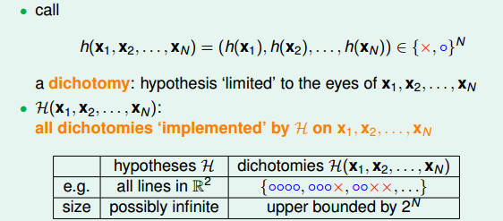
再介紹一個新的名詞：成長函數（growth function），記為。成長函數的定義是：對於由 N 個點組成的不同集合中，某集合對應的 dichotomy 最大，那麼這個 dichotomy 值就是，它的上界是：
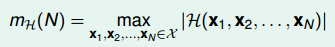
成長函數其實就是我們之前講的 effective lines 的數量最大值。根據成長函數的定義，二維平面上， 隨 N 的變化關係是：
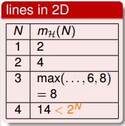
接下來，我們討論如何計算成長函數。先看一個簡單情況，一維的 Positive Rays：
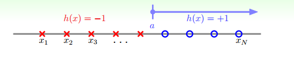
若有 N 個點，則整個區域可分為 N+1 段，很容易得到其成長函數。注意當 N 很大時，，這是我們希望看到的。
另一種情況是一維的 Positive Intervals：
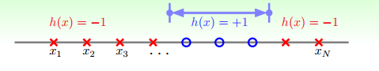
它的成長函數可以由下面推導得出：
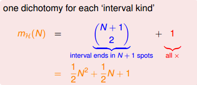
這種情況下，，在 N 很大的時候，仍然是滿足的。
再來看這個例子，假設在二維空間裡，如果 hypothesis 是凸多邊形或類圓構成的封閉曲線，如下圖所示，左邊是 convex 的，右邊不是 convex 的。那麼，它的成長函數是多少呢？
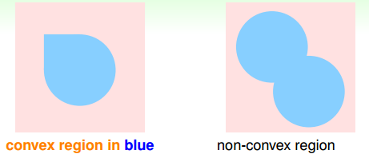
當資料集 D 按照如下的凸分佈時，我們很容易計算得到它的成長函數。這種情況下，N 個點所有可能的分類情況都能夠被 hypotheses set 覆蓋，我們把這種情形稱為 shattered。也就是說，如果能夠找到一個資料分佈集，hypotheses set 對 N 個輸入所有的分類情況都做得到，那麼它的成長函數就是。
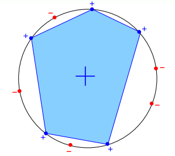
# Break Point
上一小節，我們介紹了四種不同的成長函數，分別是：
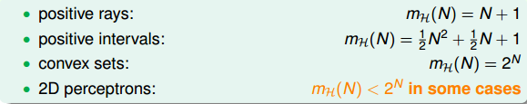
其中，positive rays 和 positive intervals 的成長函數都是 polynomial 的，如果用 代替 M 的話，這兩種情況是比較好的。而 convex sets 的成長函數是 exponential 的，即等於 M，並不能保證機器學習的可行性。那麼，對於 2D perceptrons，它的成長函數究竟是 polynomial 的還是 exponential 的呢？
對於 2D perceptrons，我們之前分析了 3 個點，可以做出 8 種所有的 dichotomy，而 4 個點，就無法做出所有 16 個點的 dichotomy 了。所以，我們就把 4 稱為 2D perceptrons 的 break point（5、6、7 等都是 break point）。令有 k 個點，如果 k 大於等於 break point 時，它的成長函數一定小於 2 的 k 次方。
根據 break point 的定義，我們知道滿足 的 k 的最小值就是 break point。對於我們之前介紹的四種成長函數，他們的 break point 分別是：
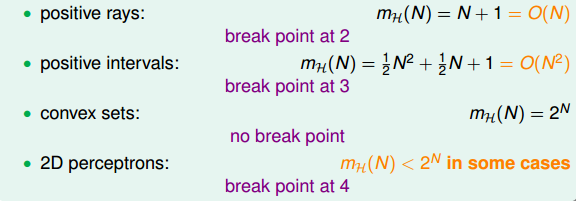
通過觀察，我們猜測成長函數可能與 break point 存在某種關係：
- 對於 convex sets，沒有 break point，它的成長函數是
- 對於 positive rays，break point, k=2，它的成長函數是；
- 對於 positive intervals，break point, k=3，它的成長函數是
- 則根據這種推論，我們猜測 2D perceptrons，它的成長函數
如果成立，那麼就可以用 代替 M，就滿足了機器能夠學習的條件。關於上述猜測的證明，我們下節課再詳細介紹。
# Conclusion
本節課，我們更深入地探討了機器學習的可行性。我們把機器學習拆分為兩個核心問題： 和。
對於第一個問題，我們探討了 M 個 hypothesis 到底可以劃分為多少種，也就是成長函數。並引入了 break point 的概念，給出了 break point 的計算方法。
下節課，我們將詳細論證對於 2D perceptrons，它的成長函數與 break point 是否存在多項式的關係，如果是這樣，那麼機器學習就是可行的。